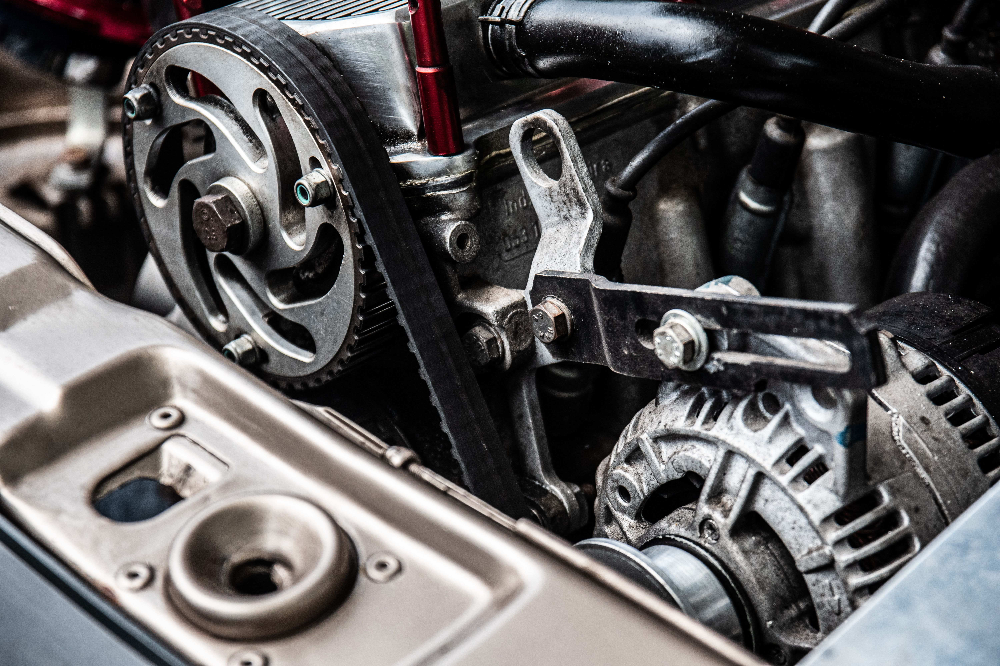

Why Is My Car Making a Squealing Noise? Free AI Diagnosis
Hearing a squealing noise from your car? Whether it happens when starting, accelerating, braking or turning, upload a recording and let Carithm AI identify the most likely cause in seconds.

My squealing noise happens...
Select when you hear the noise to narrow down the cause:
Common Symptoms
- Squeals on cold mornings
- Only squeals when accelerating
- Squeals after rain
- Squeals when turning
- Squeals after replacing the belt
- Constant high pitched squeal
Common Causes of a Car Squealing Noise
A squealing noise usually means a rotating component is slipping or wearing out. Some causes are harmless, while others should be repaired immediately.
- Worn serpentine belt
- Loose drive belt
- Failing belt tensioner
- Bad pulley bearing
- Alternator bearing wear
- Brake pad wear indicators
- Wheel bearing beginning to fail
- Power steering belt slipping
- Water pump bearing
Not sure where the squeal is coming from?
Upload a recording first. Our AI can distinguish between:
- Belt squeal
- Pulley bearing
- Brake squeal
- Wheel bearing
- Alternator
- Water pump
When Does The Squealing Happen?
The timing of the noise helps narrow the diagnosis.
| When you hear it | Possible Cause |
|---|---|
| Cold start | Serpentine belt slipping |
| While accelerating | Belt tension, alternator or pulley |
| While braking | Brake wear indicators |
| While turning | Power steering belt or wheel bearing |
| Constant at idle | Pulley bearing or accessory component |
Is It Safe To Keep Driving?
Sometimes. A worn belt may simply squeal for weeks. However, if the noise suddenly becomes much louder, is accompanied by smoke, burning rubber, battery warnings or engine overheating, stop driving immediately. Our AI can help determine how serious the problem may be, but you should always inspect the vehicle if severe symptoms appear.
How Carithm AI Diagnoses Squealing Noises
- Record 10–30 seconds of your vehicle.
- Upload the audio.
- Our AI compares your recording against dozens of known vehicle fault patterns.
- If available, combine the result with OBD-II fault codes for greater confidence.
- Receive likely causes, confidence scores and recommended next steps.
Frequently Asked Questions
Can a squealing noise come from the engine?
Yes. Belts, pulleys, alternators, water pumps and tensioners can all produce engine squealing sounds.
Can low temperatures cause squealing?
Yes. Cold weather often causes worn belts to slip until they warm up.
Can brakes make a squealing noise?
Absolutely. Many brake pads include wear indicators designed to squeal when replacement is needed.
Can I diagnose the noise by listening?
Experienced mechanics often can, but subtle differences between belt, bearing and brake noises are difficult to hear. Our AI analyzes patterns that are easy to miss.
Similar Car Noises
Not sure it's actually a squealing noise?
Compare with other common mechanical sounds: